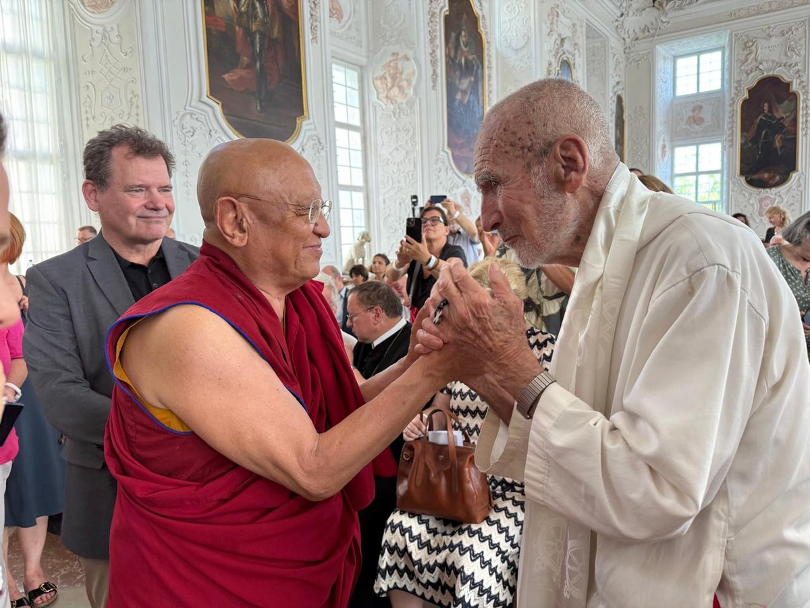
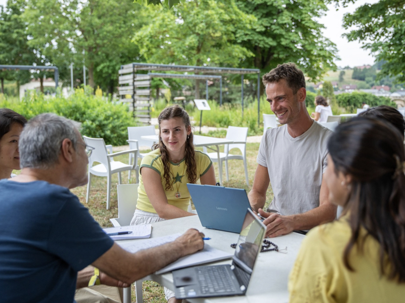
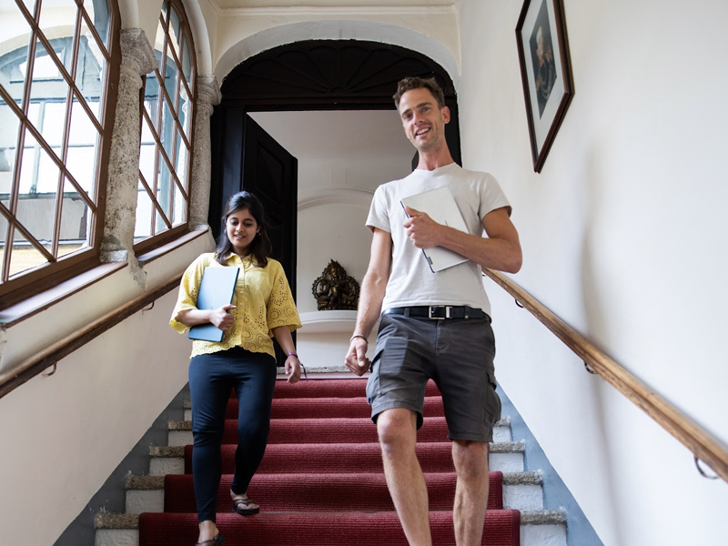
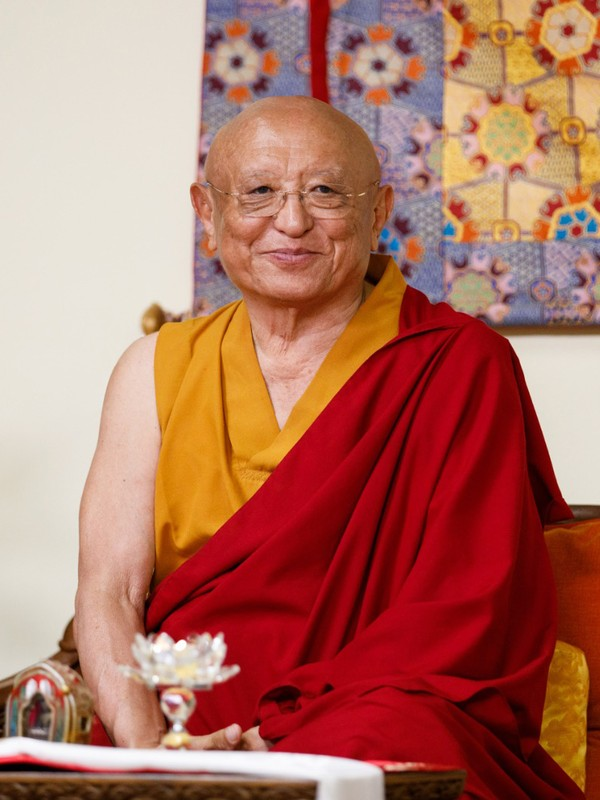
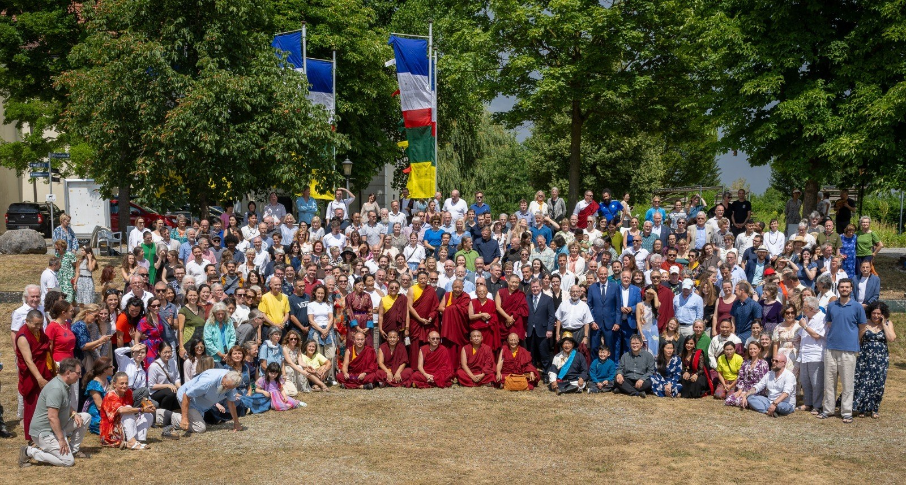
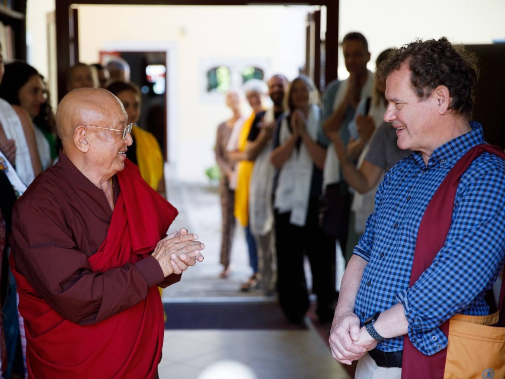
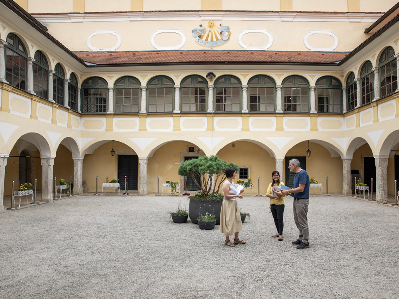
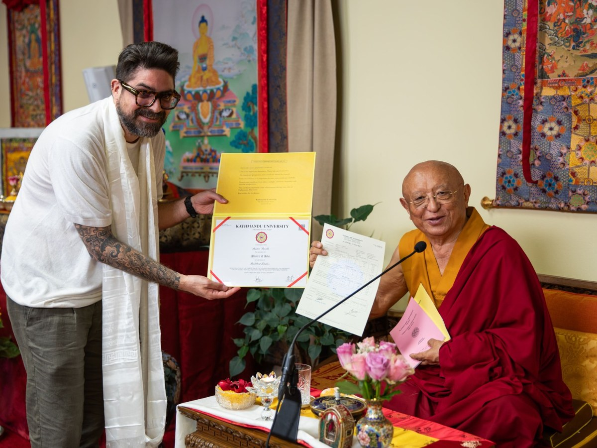
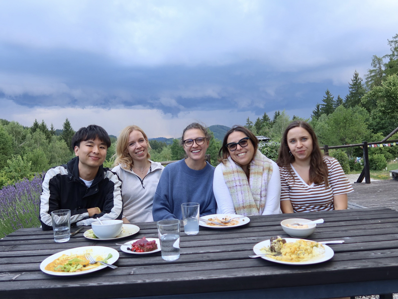

Kremsegg University
Train your mind.
Impact the world.
An innovative university, created by renowned contemplative teachers, a world-class faculty, and experienced leaders, is taking shape in the hills of Upper Austria.
Rangjung Yeshe Institute, our partner institution, has granted accredited degrees in Kathmandu since 1997 and placed graduates in doctoral programs at elite universities around the world.
Established in 2019, the Kremsegg University Project’s annual summer program has attracted more than 500 participants in 2026.
of historic space at Schloss Kremsegg, a majestic estate dating to the 13th century.
Contemplative Wisdom in dialogue with the sciences of mind and complexity: an education for the coherent leadership that our challenging future demands.
Kremsegg University aims to combine rigorous academic study with contemplative training through hands-on, project-based learning. What students learn and who they become advance together. The University is founded by Chökyi Nyima Rinpoche, a renowned Tibetan contemplative educator, in partnership with a committed team of academic researchers and business leaders led by Founding Rector Professor John Dunne, internationally recognized for his work in contemplative science.
Kremsegg University will welcome students and scholars of every tradition and discipline, with an emphasis on collaboration, cooperation, and a systemic approach to problem-solving. With sufficient support, Kremsegg University will welcome its first students in 2029.
Read about the university
Rooted and open
Guided by one of the great Buddhist teachers of our era and open to every tradition.
Rinpoche’s vision
The whole person
Academic rigor and contemplative training are integrated: transformation of the person inside is essential to effective action and meaningful impact on the world outside.
How we teach
For the world that’s coming
Students learn to think systemically; to see how culture, economics, and ecology interact across scales; and to act with care under pressure.
The visionContemplatives, academics, and innovators together creating Kremsegg

Chökyi Nyima Rinpoche
Founder and Honorary President

Professor John Dunne
Founding Rector

Dr. Andreas Doctor
Managing Director
Advisors and collaborators include Lara Bezerra (Roche), Tom Erickson (Wisconsin), Antoine Lutz (INSERM), John Makransky (Boston College), James Gentry (Stanford), Adam Goldstein (Softmax), Gábor Karsai (Dharma Gate Buddhist College).

Demonstrated Expertise
for an Innovative Future

The Founding Rector is in place.
Professor John Dunne holds the Distinguished Chair in Contemplative Humanities at the Center for Healthy Minds, University of Wisconsin–Madison. He is a leading figure in contemplative science, with extensive experience in program-building and academic leadership. He has advised our partner institution, Rangjung Yeshe Institute, for more than two decades.

The regulatory pathway is mapped.
Our statutes and core policies have been drafted with the assistance of Dr. Achim Hopbach, former Managing Director of AQ Austria, the national accreditation agency.

The model is proven.
Since 1997, Rangjung Yeshe Institute has joined traditional monastic study with accredited degrees through Kathmandu University, and Professor Dunne’s work in the Student Flourishing Initiative shows that an education rooted in contemplative science can be scientifically validated.

We have already begun.
Since 2019, the Kremsegg University project has hosted a series of academic summer programs at Rangjung Yeshe Gomde, our partner institution in Austria. Hundreds of online and in-person students have benefited.
“Intelligence without compassion is dangerous. Compassion without wisdom cannot see the path forward.”Chökyi Nyima Rinpoche
Your founding gift creates an institution focused on a future of global prosperity
Conversations with prospective founding partners are private, unhurried, and held directly with the Founding Rector and the development team.